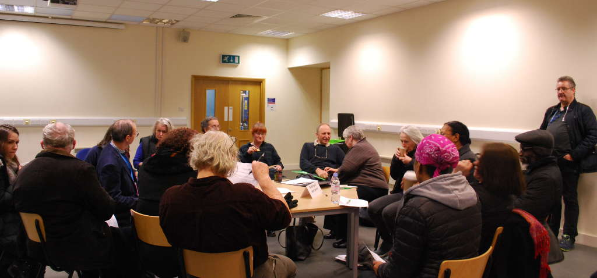

About us
Above: a break-out group at our Woolwich Masterplan Conference in February 2019.
We are a group of local residents with a passion for Woolwich and its diverse communities. Speak Out Woolwich was formed in 2018.
Our aims
-
Foster community cohesion and civic pride in the Woolwich area.
-
Represent the views of local people in regeneration and development schemes in the Woolwich area.
-
Improve the provision of council, social and genuinely affordable local housing in Woolwich that meets the needs of the local community.
-
Enhance the local environment, services and amenities, including protecting local heritage, in the Woolwich area.
-
Encourage local job creation and support the local economy.
-
Develop a community-led plan for the Woolwich area.
-
Oppose all forms of discrimination that affect the health, dignity and life opportunities of local residents.Foster community cohesion and civic pride in Woolwich.